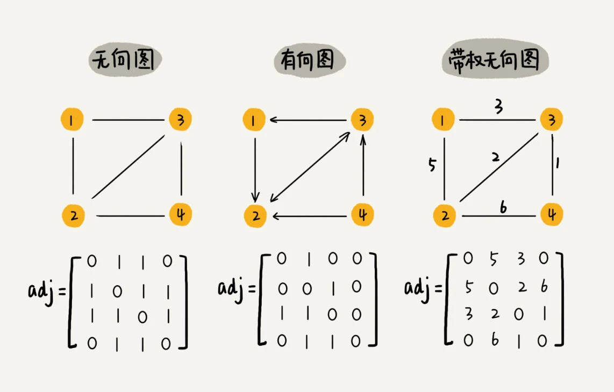
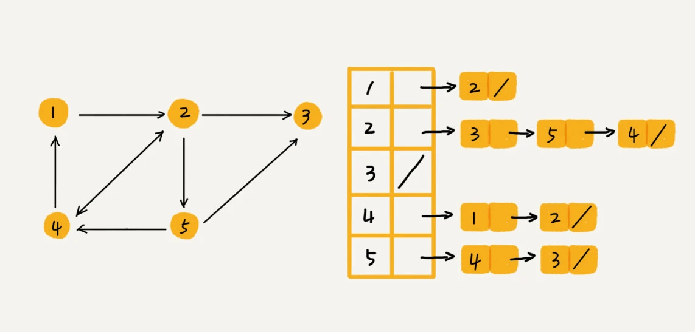

一，图的理解
图和树一样都是非线性表数据结构，但是更复杂。树中的元素我们称为节点，图中的元素我们叫作顶点（vertex）。图中的一个顶点可以与任意其他顶点建立连接关系，这种连接关系叫作边（edge）。有方向的图叫做“有向图”。以此类推，我们把边没有方向的图就叫做“无向图”。
在有向图中，我们把度分为入度（In-degree）和出度（Out-degree）。顶点的入度，表示有多少条边指向这个顶点；顶点的出度，表示有多少条边是以这个顶点为起点指向其他顶点。通过方向可以用来表示微博的粉丝量和关注量，入度表示有多少粉丝，出度表示关注了多少人。
每条边都有一个权重（weight）的无向图叫作带权无向图（weighted graph），通过这个权重可以用来表示QQ好友间的亲密度。
二，邻接矩阵存储方法
图最直观的一种存储方法就是，邻接矩阵（Adjacency Matrix）。
邻接矩阵的底层依赖一个二维数组。对于无向图来说，如果顶点 i 与顶点 j 之间有边，我们就将 A[i][j] 和 A[j][i] 标记为 1；对于有向图来说，如果顶点 i 到顶点 j 之间，有一条箭头从顶点 i 指向顶点 j 的边，那我们就将 A[i][j] 标记为 1。同理，如果有一条箭头从顶点 j 指向顶点 i 的边，我们就将 A[j][i] 标记为 1。对于带权图，数组中就存储相应的权重。

邻接矩阵存储图虽然存储方式简单、也方便计算，但是在一些情况下会造成空间的浪费。
如果用邻接矩阵存储无向图会造成存储空间的浪费，因为对于无向图来说，如果 A[i][j] 等于 1，那 A[j][i] 也肯定等于 1。实际上，我们只需要存储一个就可以了。也就是说，无向图的二维数组中，如果我们将其用对角线划分为上下两部分，那我们只需要利用上面或者下面这样一半的空间就足够了，另外一半白白浪费掉了。
还有，如果我们存储的是稀疏图（Sparse Matrix），也就是说，顶点很多，但每个顶点的边并不多，那邻接矩阵的存储方法就更加浪费空间了。
如果有
n个顶点，所需构建的二维矩阵就是n*n，如果每个顶点的边不是很多，就是造成矩阵的很多元素都是0，从而导致存储空间的浪费。
三，邻接表存储方法
针对上面邻接矩阵比较浪费内存空间的问题，我们来看另外一种图的存储方法，邻接表（Adjacency List）。
邻接表的存储关系如下图所示。

图中画的是一个有向图的邻接表存储方式，每个顶点对应的链表里面，存储的是指向的顶点。
邻接表的本质是用时间换空间，邻接矩阵存储起来比较浪费空间，但是使用起来比较节省时间。相反，邻接表存储起来比较节省空间，但是使用起来就比较耗时间。
就像图中的例子，如果我们要确定，是否存在一条从顶点 2 到顶点 4 的边，那我们就要遍历顶点 2 对应的那条链表，看链表中是否存在顶点 4。而且，链表的存储方式对缓存不友好。所以，比起邻接矩阵的存储方式，在邻接表中查询两个顶点之间的关系就没那么高效了。
邻接表结构长得像散列表，因此也可对邻接表进行改进升级。我们可以将邻接表中的链表改成平衡二叉查找树。实际开发中，我们可以选择用红黑树。这样，我们就可以更加快速地查找两个顶点之间是否存在边了。当然，这里的二叉查找树可以换成其他动态数据结构，比如跳表、散列表等。除此之外，我们还可以将链表改成有序动态数组，可以通过二分查找的方法来快速定位两个顶点之间否是存在边。
总结
邻接矩阵存储方法的缺点是比较浪费空间，但是优点是查询效率高，而且方便矩阵运算。邻接表存储方法中每个顶点都对应一个链表，存储与其相连接的其他顶点。尽管邻接表的存储方式比较节省存储空间，但链表不方便查找，所以查询效率没有邻接矩阵存储方式高。针对这个问题，邻接表还有改进升级版，即将链表换成更加高效的动态数据结构，比如平衡二叉查找树、跳表、散列表等。